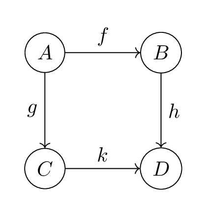
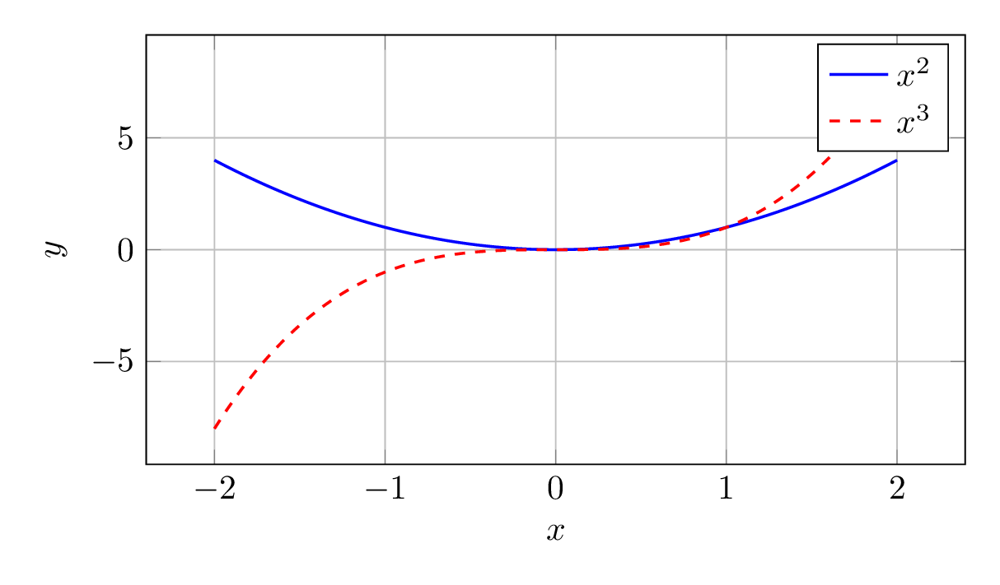

LaTeX Demo
1 LaTeX Features Demo
This notebook demonstrates the LaTeX capabilities available in your blog posts.
1.1 Basic Math
Inline math: \(E = mc^2\) and \(\int_0^\infty e^{-x^2} dx = \frac{\sqrt{\pi}}{2}\)
Display math:
\[\sum_{n=1}^{\infty} \frac{1}{n^2} = \frac{\pi^2}{6}\]
1.2 Custom Macros
The following shortcuts are pre-defined:
- Number sets: \(\R\), \(\N\), \(\Z\), \(\C\), \(\Q\)
- Norms and absolute values: \(\norm{x}\), \(\abs{y}\)
- Inner products: \(\inner{u}{v}\)
- Derivatives: \(\dv{f}{x}\), \(\pdv{f}{x}\)
\[\int_\R f(x) \dd{x} = \inner{f}{g}\]
1.3 Physics Notation
Bra-ket notation:
\[\bra{\psi}\ket{\phi} = \braket{\psi}{\phi}\]
\[\hat{H}\ket{\psi} = E\ket{\psi}\]
Matrices and operators:
\[\mqty(a & b \\ c & d) \vb{x} = \vb{y}\]
1.4 Probability & Statistics
Expected value: \(\E{X}\)
Variance: \(\Var{X}\)
Covariance: \(\Cov{X}{Y}\)
Probability: \(\Prob{X > 0}\)
\[\E{X} = \int_\R x f(x) \dd{x}\]
1.5 Advanced Equations
Aligned equations:
\[\begin{aligned} \nabla \cdot \vb{E} &= \frac{\rho}{\epsilon_0} \\ \nabla \cdot \vb{B} &= 0 \\ \nabla \times \vb{E} &= -\pdv{\vb{B}}{t} \\ \nabla \times \vb{B} &= \mu_0\vb{J} + \mu_0\epsilon_0\pdv{\vb{E}}{t} \end{aligned}\]
1.6 Matrices
\[A = \begin{pmatrix} 1 & 2 & 3 \\ 4 & 5 & 6 \\ 7 & 8 & 9 \end{pmatrix}\]
\[\det(A - \lambda I) = 0\]
1.7 Code + Math
Here’s some Clojure code alongside math:
(defn quadratic-formula
"Solves ax² + bx + c = 0"
[a b c]
(let [discriminant (- (* b b) (* 4 a c))
sqrt-disc (Math/sqrt discriminant)]
[(/ (+ (- b) sqrt-disc) (* 2 a))
(/ (- (- b) sqrt-disc) (* 2 a))]))(quadratic-formula 1 -5 6)[3.0 2.0]The quadratic formula:
\[x = \frac{-b \pm \sqrt{b^2 - 4ac}}{2a}\]
1.8 TikZ Diagrams
TikZ diagrams are pre-rendered to PNG for web display. Use the tikz namespace to render diagrams:
(tikz/render
"\\begin{tikzpicture}[node distance=2cm, auto]
\\node[draw, circle] (A) {$A$};
\\node[draw, circle, right of=A] (B) {$B$};
\\node[draw, circle, below of=A] (C) {$C$};
\\node[draw, circle, below of=B] (D) {$D$};
\\draw[->] (A) -- node {$f$} (B);
\\draw[->] (A) -- node[left] {$g$} (C);
\\draw[->] (B) -- node {$h$} (D);
\\draw[->] (C) -- node {$k$} (D);
\\end{tikzpicture}"
"commutative-diagram"
:caption "A commutative diagram"
:width "50%")
1.8.1 Function Plot Example
(tikz/render
"\\begin{tikzpicture}
\\begin{axis}[
xlabel=$x$,
ylabel=$y$,
domain=-2:2,
samples=100,
grid=major,
width=10cm,
height=6cm
]
\\addplot[blue, thick] {x^2};
\\addplot[red, thick, dashed] {x^3};
\\legend{$x^2$, $x^3$}
\\end{axis}
\\end{tikzpicture}"
"function-plot"
:caption "Polynomial functions"
:width "70%")
source: notebooks/latex-demo.clj